The following is the full text of the author's notes for a talk delivered to the Society for Scientific Exploration, Second European Conference, August 24-26, 1994 in Renfrew, Scotland.However, in the latter part of July 1994, after these notes were prepared, we heard about the collision with Jupiter of the comet Shoemaker-Levy 9. It caused the author to add a few extra items to show by the overhead viewer during the initial stages of the presentation. The viewgraphs used are those presented below in block form. The case presented was that the evidence adduced from the collision of that comet with Jupiter helped to confirm that the aether plays a role in powering the energy conveyed by a comet. The author sees scope for gaining access to some of that energy locked in aether spin, a feature of all astronomical bodies, but one that appears also in plasma research in our laboratories. The initial set of block illustrations used as viewgraphs and pertaining to the subject of the comet will, therefore, be presented ahead of the 'introduction' in the main text, appearing in the sequence in which they were shown at the Renfrew meeting.
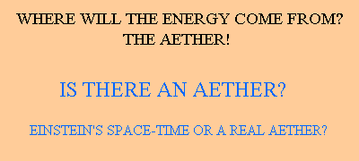
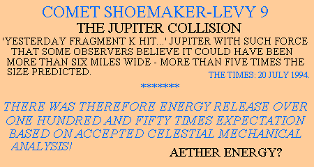
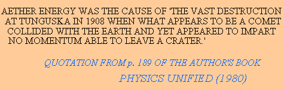
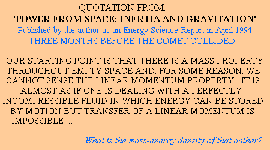
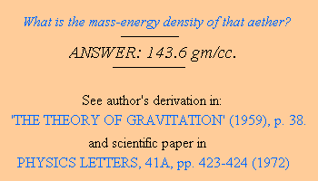
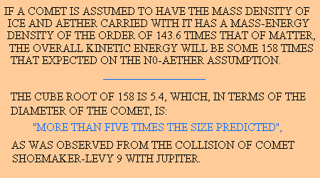
The author discusses the scope for experimental exploration of the role which the aether can play in the energy science of the future. Under three headings concerned with exploration of (a) the 'past', (b) the 'unknown' and (c) 'bench space', attention is drawn (a) to the misinterpretation of an early experiment, (b) to the 'unknown' experiment that is decisive on the aether question and (c) to the experiments that are now needed to tap into the energy resource of the aether in the space environment of the laboratory bench.
A century ago it was generally accepted that space was filled with an aethereal medium. This invisible medium was regarded as having two important properties. It limited the speed of passage of electromagnetic waves and it contained electrical charge in some neutral mixture which could develop electric fields when oscillated by the passage of those waves.
Science confronted two problems, one of a theoretical nature and one that had been encountered by experiment. Aether theory needed to model the medium as both a fluid and a solid and that seemed illogical. Experimentally, Michelson and Morley, in their efforts to detect our Earthly motion through space, found that they could not sense that from the speed differential of reflected light waves.
Today most scientists know about the latter experiment and have heard of that Einstein's theory came to the rescue by telling us that Nature requires us to adapt our experimental frame of observation when moving in such a way that we cannot detect motion through space using apparatus sharing that motion. They go further and will tell you that the 'aether' is a figment of past imagination, not needed by modern science and having no real existence. The mathematically abstract formulation of the 'space-time' manifold, with its four-space dimensions, is the accepted model.
Now, very few scientists really care enough about the fundamental truths concerning space and aether to give voice to their doubts about the Einstein doctrine. It is easier to accept what they do not really understand, because those who profess superior knowledge seem satisfied with the theory. Yet, there are, in fact, numerous individuals who dabble in matters scientific and struggle to build their own alternative picture of that 'aether' medium.
I am one such individual and, having shown my interest, I have become the recipient of accounts of many such theories, but I have yet to see a consensus developing on anything but the common belief that Einstein's theory is wrong and should be replaced by something better.
So, I well know that I would be wasting my time to devote effort here into presenting my theoretical ideas and this is why I seek now to urge my case forward by experiment.
The problem with this is that experiments need funding and those which are devised to explore science along lines that manifestly go against standard teachings are non-runners in the contest for funds and even the proposal can brand the proponent as a heretic. As a result the only really challenging experimentation that one expects to see in this field is that which is undertaken by the so-called 'crank', the individual who has time and his own personal resource to embark on research to test his or her own hypothesis.
Now, in devising a new experiment one must first question whether that experiment has already been done by others. There are important experiments of historical record that are not mentioned to us in textbooks because they do not fit in with the teaching of standard principles.
Since my subject is an interest in the 'aether', I draw attention to one such experiment, the 1903 Trouton-Noble experiment. This was an experiment which argued that, if the accepted teachings in electrodynamics were correct, two opposite electrical charges carried forward through the aether should set up a turning couple in their mutual interaction. This couple, which ought to be measurable by suspending a charged parallel plate capacitor in a torsion balance, should then give a measure of the Earth's motion through space. By switching the charged condition of the capacitor on and off in timed sequence related to the natural oscillation period of that torsional suspension, so any motion through the aether ought to be detected.
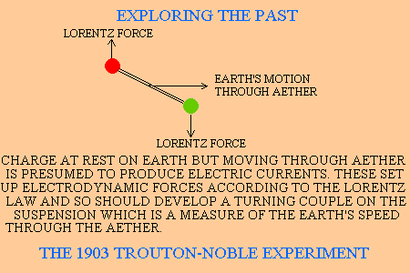
Now, if any scientific historian can point to any record that such alternative interpretation was considered at a time contemporary with that experiment I would, indeed, appreciate being sent the reference. As it was, I suspect that Lorentz upset the situation by immediately taking the initiative. He was convinced that his law was right and he was mindful of the null result of the Michelson-Morley Experiment and so the Trouton-Noble experiment was seen by him as justification for what has come to be termed Lorentz invariance. Our concepts of space and time were then distorted to squeeze from the experiment something that looked compatible.
To explain the Michelson-Morley experiment, Lorentz had, in his 1895 paper, argued that apparatus can shorten in the direction of motion. He introduced his 1904 paper by reference also to the Trouton-Noble experiment and in 1905 we see Einstein enter the fray with his theory of relativity.
Yet, where was that discerning scientist who could argue by logic that if two assumptions are relied upon, motion through the aether and conformity with an arbitrary law of electrodynamics, and the experiment gives a null, then either or both of those assumptions could be wrong?
One can say that Lorentz was guided by the null of the Michelson-Morley experiment, and this favoured the abandonment of the aether hypothesis, but that was also justification for not performing the Trouton-Noble experiment in the first place and the fact that it was performed as an electrodynamic experiment should have put the emphasis on the fact that the Lorentz force law was, as just stated, arbitrary. It was arbitrary because, as was well established from the work of Ampere, as amplified later by others including Maxwell, all empirical data on the subject had involved at least one closed circuital current in the tested interaction. The Trouton-Noble experiment was an experiment which involved two discrete charges transported as individual charges with neither forming part of a closed current circuit.
The need for that 'discerning scientist' was even more in evidence when, in retrospect, one can see that the Trouton-Noble experiment reveals that, if there is motion through the electromagnetic reference frame as the Earth moves through the aether, so the mutual electrodynamic force between two discrete charges acts directly along the line joining those charges and so develops no out-of-balance couple. Here was evidence of the link with gravitation, that quest in search of the Holy Grail in unified field theory, the clue by which to link electrodynamic action and gravitation.
It was missed when it should have been seen, as Lorentz took the initiative and went adrift in pushing his ideas on the invariance theme, defending his force law but at the price of abandoning the role played by the aether in the Trouton-Noble experiment.
So, in exploring the science of the past, one can begin to see where the wrong path was taken. It was a path leading away from the aether and its vast energy resource - a pathway to an abstract world of illusion and fantasy bred from doctrinaire beliefs in Einstein's theory.
Scientific exploration may be deemed to involve research into new territory, but science today is such that explored territory, already mapped, can fail to be included in modern surveys. The reason is that the Establishment suppresses that which it finds embarrassing and so the scientific work fails to be recorded in the citators giving reference access. Certainly, there is a tendency by those who teach and engage in research to presume that, if they have a specialist knowledge in a particular subject, anything of importance in that field will somehow be drawn to their attention by their ongoing involvement in conferences or inspection of primary refereed literature.
Therefore, now ask the question whether that Lorentz force law that I have mentioned above and challenged as being arbitrary and invalid when applied to the discrete charge interaction has ever been proved to be invalid by direct experiment. Note that in mentioning the Lorentz force law I am not referring to some unimportant feature of science. Every electrical machine in existence depends upon the way moving electric charge acts on other moving electrical charge. The Lorentz law sums up our understanding of the forces acting between those moving charges. Therefore, what is at issue here is not something of a curiosity that might concern rare phenomena or events in outer space. The subject in question is the force that dominates the electrical power industry and the peripheral questions that arise such as where the energy is stored when an electric current is fed into an induction coil in an automobile.
All that the Lorentz law tells us is that the electrodynamic action between moving charges acts on a charge at right angles to its motion, so it in no way gives basis for an induction energy process, which needs a force action directed in the line of motion. I submit that the experiment of record that actually disproves the Lorentz force law is unknown to those who profess to teach electrical engineering in our universities. They will question what I say because they can 'get by' without that knowledge, teaching machine design based on empirical evidence from the past, but they will not then be teaching what is possible in future machine design, because there is territory in electrical science that they have not explored themselves.
It was 35 years ago that I published a work on the theory of gravitation, drawing attention to the error in the law of electrodynamics. Several years later I was visited by a young London University research student. He was writing a thesis on General Relativity for his Ph.D. It was his exposure to my dissident opinions that caused him to direct his attentions away from Relativity and turn his mind to the flaws in electrodynamic theory. As an aside I mention that Einstein's famous 1905 paper was entitled 'On the Electrodynamics of Moving Bodies', so one will understand why relativity and electrodynamics are connected. Now, I mention this because that then-young research student, whose name was Pappas, eventually teamed up with a radio enthusiast in USA, named Vaughan, and together they performed a definitive experiment which disproves the Lorentz force law.
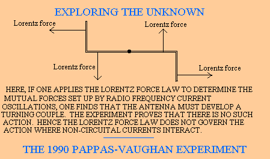
I declare that this experiment, which did give a null result, is one that ranks alongside those of Michelson-Morley and Trouton-Noble, but the world of modern science has shunned the experiment because the implications are too far reaching. It is of record in Physics Essays, v. 3, 211-216 (1990).
There are physicists who will say that the experiment does not take account of the electric displacement currents in the enveloping space and claim that that the Lorentz forces exerted on those currents will account for the balance of that predicted turning action. In saying that they are declaring that the vacuum medium can absorb forces and be part of the dynamic system under consideration. That is tantamount to an admission that one can push against the aether itself and be pushed by the aether and that means there is scope for drawing energy from that aether. Such are the implications if one pays attention to the experimental evidence and avoids being misled by false theory.
It must be understood that to change the course of science it is no longer sufficient to perform an experiment, unless it is one that is done within the corridors of institutional power. Experiments that challenge established doctrine are not undertaken in such institutions. Experiments performed outside are not accepted. The only way forward for those enterprising souls who really want to see a major advance from scientific exploration is to head in the direction of an experiment that is destined to have a major technological impact.
This is the theme I will now follow, based on some groundwork references to my own perception of the aether. Note I am not urging interest in my theory. All I seek is to give the foundation for the two experiments I propose. The first experiment I will leave to others to perform, but I will undertake the second experiment myself and report on its outcome in due course.
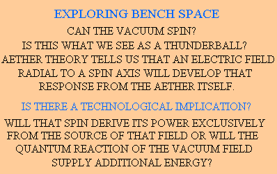
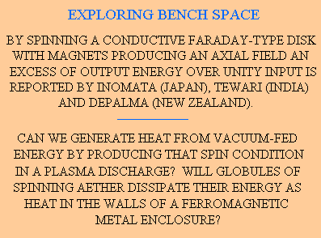
I stated at the outset that in the last century scientists faced the irreconcilable problem of modelling the aether as a fluid and as a solid, inasmuch as the properties of both need to be merged. Those scientists did not have in their possession the pocket calculator with its liquid crystal display. Crystals form when particles find they can settle into a lower energy state if they group together in an orderly way. Thus, water can turn into ice as it sheds heat energy. The 'liquid crystal' is something that depends upon extraneous electric fields, meaning that the transition from fluid to crystal form is controlled by external influence. Equally external influence in the form of heat or vibration or simply a motion of material structure through the liquid could well preclude crystal formation.
Thus, if the vacuum were to have the natural attribute of a crystal form - a kind of solid structure - it could well be that the presence of matter could cause it to dissolve into fluid form before regrouping to crystal form sharing the motion of that matter. My point here is that, whether we are talking about aether or water or that special liquid we see in our pocket calculators, we must be prepared for the structure of a crystal form to play some role.
It was analysis of the aether on these lines that led me to develop an understanding of a process I call 'vacuum spin'. The action of producing an electric field radial from an axis should, in theory, promote any structural form of aether nucleated on that axis to spin and draw inertial energy from the space environment. I saw this as featuring in the creation of stars and planets, and as accounting for the creation of thunderballs developed from electrical action centred on the axis of a lightning discharge, but in a bench experiment the effect could occur in certain types of rotary machine. A Faraday disc is one such apparatus because the rotation of a conductor in an axial magnetic field induces radial electric displacement in the aether coextensive with that disc.One should expect anomalous energy and inertial effects if one spins the rotor of such a machine and, indeed, I hear of reports that do confirm anomalous generation of power - power from the aether, as it were - emerging from such experiments. However, that aside, for a moment, the experiment I would commend to a laboratory physicist is one in which an arc discharge in a near vacuum is set up between two electrodes, one positioned vertically above the other and a cylindrical wire mesh cage coaxial with the discharge path is caused to spin around that axis when there is a discharge. The object of the experiment is quite simple. It is well known from the early research which led to the interest in hot nuclear fusion that it is virtually impossible to tame a discharge and keep it on a straight and narrow path as it pinches at high currents. The discharge is wild in its snakelike movements. The non-rotation of the enclosing cage has no effect on that activity, but I have in mind an experiment with a rotating cage to see if the arc becomes stable.
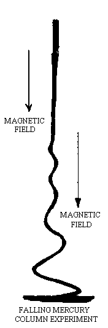
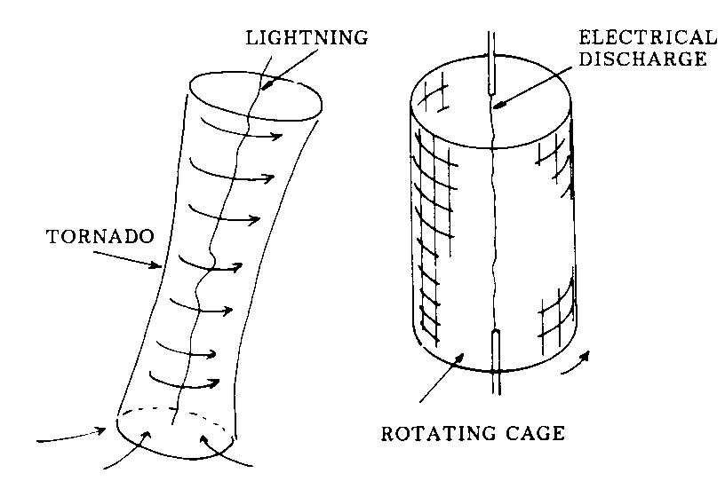
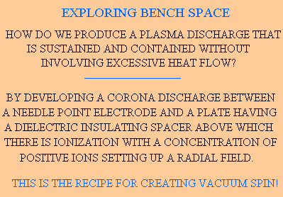
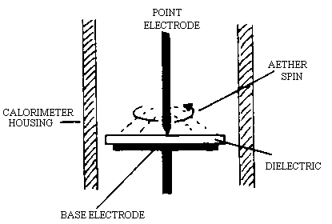
As I stated above the expectation with the Faraday disc experiment is that the vacuum would shed energy and develop rotational inertia in that disc. This should depend upon the angle subtended between the spin axis of the apparatus and that prevailing in the vacuum medium itself, meaning that as the Earth rotates to reorientate the experimental set-up so the power of the coupling action between vacuum and disc should vary. That again would reveal exciting information about the true existence of the aether.
Whilst still on the theme of bench-type experiments, vacuum spin and fluid crystals, I think it worthwhile to mention a recent BBC television programme about Heretics, the first in the series being concerned with a phenomenon attributed to water. Does water have a property which allows it to replicate crystals which store information so that however often it is diluted it can retain that information? Physicists ridicule this suggestion even though it is an experimental finding of a well-established French scientist. However, consider what I have said above with water in mind as a medium that can develop fluid crystals.
Take a single ion H3O+ together with a group of normal water molecules and consider the radial electric field which emanates from that ion. It will, by the argument I have put above, develop a 'vacuum spin' and I can visualize it being the nucleus of a tiny fluid crystal, a very small structure that could be deemed to be what we might term 'warm ice'. Now, how can this have a 'memory' and how can it replicate itself?
Well, firstly, I would like to digress a little and talk about another type of 'fluid crystal', that which develops as a 'fluid' crystal within a solid crystal, namely the ferromagnetic domain that forms inside a crystal of iron or nickel, for example. These ferromagnetic domains, indeed the whole state of ferromagnetism, occurs because their formation is energetically favoured, thanks to a certain structural combination of atomic properties in such atomic elements under appropriate temperature conditions. Physicist do not speak of these domains as 'fluid crystals' but they sometimes choose a terminology that is used to convey much the same meaning; they talk about 'magnetic bubbles'!
In 1969 I published a book entitled 'Physics without Einstein'. It was about my aether theory in which I explained how ferromagnetism developed in crystals as a function of the mechanical stress energies involved and their relation to the interaction forces between atomic electrons in atoms. I based this on orbital electron motion so that I could use the n level of quantization applicable to the Bohr atom even though in more formal atomic theory in iron, for example, the 3d electron state is the one with the n = 2 orbital quantization.
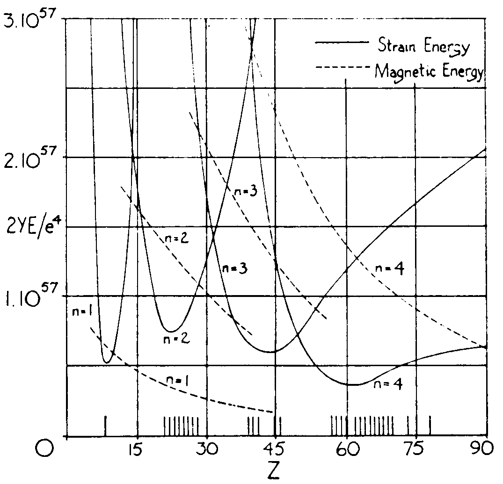
So, I am now asking myself, after watching that BBC programme on July 5th about the heresy of Jacques Benveniste, whether the oxygen component of a water crystal could, in a very minute way, nucleated in water as a fluid crystal centred on an ion, be part of a ferromagnetic structure. That makes it easier to contemplate 'memory' and recordal of information.
My speculation then extends to asking how such tiny magnets in water could avoid detection and here, thanks to that ion charge, I see an answer. There is a reacting vacuum spin of aether and, as readers of my 1969 book will see, a vacuum spin means the generation of a magnetic effect. The Earth is a magnet but we do not understand the source of that magnetism in spite of the various theories of record. I see the vacuum spin coextensive with body Earth as the seat of that magnetism and see no way for explaining the precessional motion of the magnetic poles unless the magnetism is developed in a medium which can move in an angular sense inside the Earth.
In water, therefore, those fluid crystals could nucleate a vacuum spin which cancels their intrinsic ferromagnetic field so far as effects remote from the crystal are concerned. The vacuum spin would have ellipsoidal, near spherical, form, inasmuch as this gives complementary uniform magnetic field density assuring perfect balance of the ferromagnetism of the crystal.
Now, where does memory feature in this situation? Well, just as for the Earth, where the axis of the magnetic poles precesses around the axis of the geographic poles, so the collective action of the ferromagnetic water crystal and its vacuum could account for some very small electromagnetic effects at a characteristic frequency. Conversely the external influence of an electromagnetic field varying at that frequency would condition that action, perhaps the ellipsoidal shape, meaning the ratio between the dimensions of its major and minor axes. This ratio is the variable which determines a demagnetization factor to thereby alter the magnetic property and so the appropriate frequency response.
The key question one now asks is how such crystals replicate one another. Here, the answer is that the ion and the molecular crystal centred on that ion actually nucleate a vacuum spin activity which can become separated from the ion so that the ion develops a new vacuum spin system. The free vacuum spin system is preserved by its inertial property and its energy and, as it develops an internal electric charge effect, it can promote ionization of the water in its new position. This action is therefore one that replicates the ellipsoidal form and so the characteristic frequency of the parent system but I suspect this replication process, if it occurs at all, can only occur in still water and that the water has to be shaken first to help to separate the crystals and vacuum spins that already exist.
It is along such lines that I see a route to understanding the heresy of Jacques Benveniste and also understanding certain other accounts of phenomena that involve energy anomalies in water, phenomena which seem to be excited at ultrasonic frequencies.
Once more is known about the latter phenomenon and particularly as concerns the measured frequency responses, so the physics of this proposal can be examined and possibly developed as a formal theory. One needs to see in this the role of aether in a structured crystal form, aether that can spin to capture and store energy, much as we see in the thunderball phenomenon and as we shall soon see, I believe, in a Faraday disc type of machine which is designed to tap the zero-point field energy.
I may further mention that the arc discharge as electrical corona from a point electrode can also be the nucleating factor in developing vacuum spin in the form of tiny spherical plasmoid forms which liberate energy as excess heat, energy being drawn from the vacuum medium.
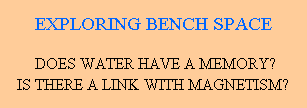
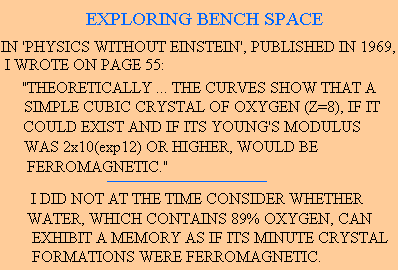
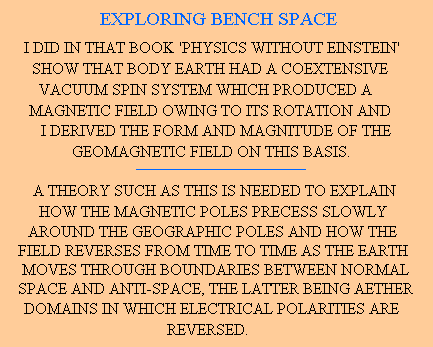
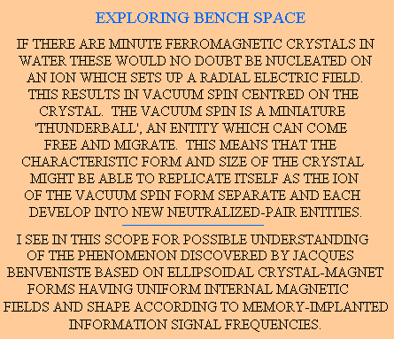
Such research offers a new source of energy now on our near horizon and there are those in our world today who can reveal the secrets of such machines. I have in mind the Methernitha community in Switzerland, where machines are in operation based on rotating discs which incorporate conductors and promote circuital electrical currents in the disc which are tapped by electromagnetic induction to deliver power continuously. The vacuum spin action sustained in those discs draws power from space itself and generates electricity measured in kilowatts from quite small machines.
Now, concerning the link with gravitation, I will end by referring to one other theme concerned with aether and vacuum spin. If one has a flywheel and imagines it to have a coextensive vacuum spin system, there is the question of what happens if one forcibly precesses that flywheel to upset the coupling with that vacuum spin. The issue centres upon whether gravitational force asserted by matter on matter is really communicated via the aether system or is communicated directly as a kind of action at a distance. If the aether plays a role in that process, as I believe, then so that forced precession can interfere with the pull of gravitation. Forced precessed gyroscopic flywheels feature as another heretical pursuit, that of Professor Eric Laithwaite, and, again, because physicists prefer not to believe in the existence of the aether so they cannot countenance scientific anomalies as effects which depend upon that aether. They would rather ridicule the proponent than help in resolving the mysteries in question.
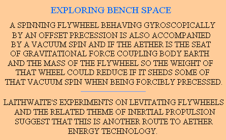
I should mention the heresy theme of Rupert Sheldrake, 'morphic resonance'. This was the subject of another in the 'Heretic' series of BBC programmes produced by Tony Edwards. After what I have said, there is reason to question whether the storage of information in the structure of water can be replicated on a larger scale in the aether itself. I have always seen the aether as a kind of all-embracing elusive 'ferromagnet' or rather what one might better refer to as an 'antiferromagnet'. Indeed, it was the study of ferromagnetism, with its domain patterns superimposed upon a crystal form with its underlying quantization, that led me to research the structural nature of the aether itself. The aether does contain domain patterns but I see these as of vast proportion, as bounded regions representing the transition barriers between what one may term 'space' and 'anti space'. The difference is one connected with an underlying asymmetry of the polarities assigned to the vacuum charge which accounts for Maxwell's displacement currents, the carriers of electromagnetic waves. In anti-space' 'positive' becomes 'negative' and vice-versa. However, I need planar interface boundaries between these domains in order to obtain the necessary homogeneous mathematical relationships governing restoring force rates when aether charge is displaced and this tells me that there are domain patterns in the aether, in close analogy with what we see in ferromagnets.
I have discussed these in my book 'Modern Aether Science' and also in my book 'Physics Unified' but, based on cosmological evidence connected with geomagnetic field reversals, they are so large that, as resonant entities or memory elements like cores in the old-fashioned computer, they can in no way meet the needs of the proposition suggested by Rupert Sheldrake. So, as Sheldrake's theme concerns interplay between life forms, whether of plants or animals, all I can suggest here is that in researching the physics of morphic resonance, assuming the concept is deemed to have basis in reality, I would look at the role water plays as the host medium for those patterns and the influence of ultrasonic magnetic excitations. In short, I would seek to confirm the findings of Jacques Benveniste before going on from there to link that with the intuitive doctrines that are advocated by Sheldrake.
However, for my part, the inertial energy experiments are a sufficient preoccupation and I must confine my efforts to that endeavour.
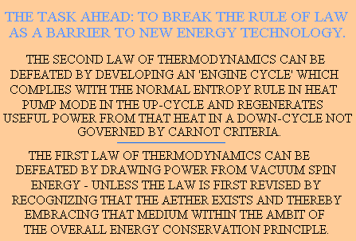